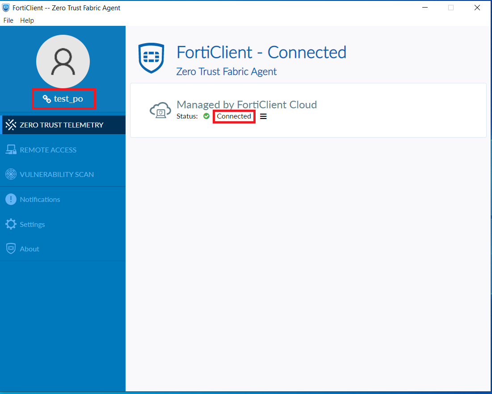
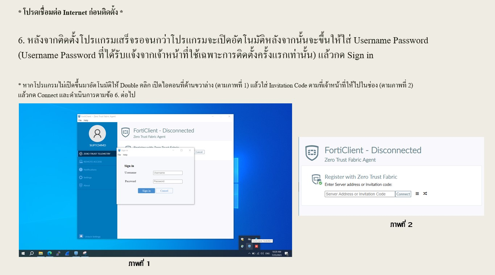
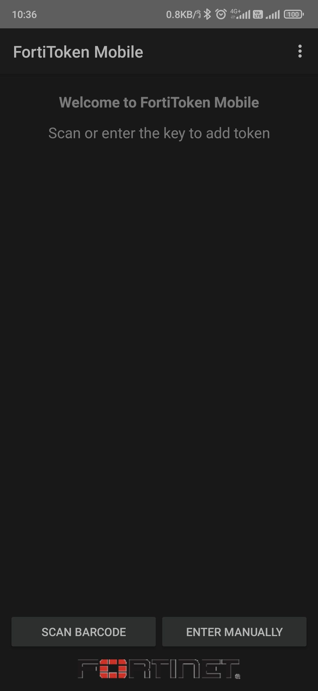

กลับหน้าหลัก
แก้ปัญหาการใช้งาน VPN
เลือกอาการที่คุณพบ แล้วทำตามขั้นตอนด้านล่าง
หากยังใช้งานไม่ได้ ติดต่อเจ้าหน้าที่ผ่าน LINE @961ugpvt
เชื่อมต่อ VPN ได้แล้ว แต่เข้าใช้งานระบบงานไม่ได้
ตรวจสอบสถานะ Zero Trust Telemetry
- เปิด FortiClient แล้วไปที่ ZERO TRUST TELEMETRY
- ตรวจสอบว่าสถานะเป็น Connected และชื่อผู้ใช้งานเป็นของคุณ


หากสถานะหรือชื่อไม่ถูกต้อง
ดำเนินการตามภาพด้านล่าง โดยใช้ข้อมูลที่ได้รับจากเจ้าหน้าที่


เมื่อตั้งค่าเสร็จ ให้ตรวจสอบอีกครั้งว่าแสดง Connected และชื่อผู้ใช้งานถูกต้อง แล้วลองเข้าระบบงานใหม่
หากยังไม่สำเร็จ ติดต่อเจ้าหน้าที่ พร้อมแจ้งอาการที่พบ
ไม่พบ FortiToken / เปลี่ยนเครื่อง / ติดตั้ง Token ใหม่
ขอ QR Code เพื่อลงทะเบียนใหม่
ใช้ขั้นตอนนี้เมื่อเปิดแอป FortiToken แล้วไม่พบ Token เปลี่ยนโทรศัพท์ หรือติดตั้งแอปใหม่


- ติดต่อ LINE @961ugpvt (เปิดแท็บใหม่) เพื่อขอ QR Code สำหรับลงทะเบียน FortiToken ใหม่
- ตรวจสอบอีเมลหัวข้อ FTM Activation on FortiGate จาก DoNotReply@notification.fortinet.net
- เปิดแอป FortiToken เลือก SCAN BARCODE แล้วสแกน QR Code ที่ได้รับทางอีเมล
หากยังไม่ได้รับอีเมลหรือลงทะเบียนไม่สำเร็จ ติดต่อเจ้าหน้าที่ เพื่อช่วยตรวจสอบ
กำลังติดตั้งครั้งแรก?
ตรวจสอบขั้นตอนตั้งค่า FortiClient หลังติดตั้ง